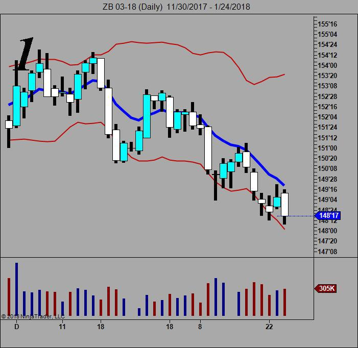
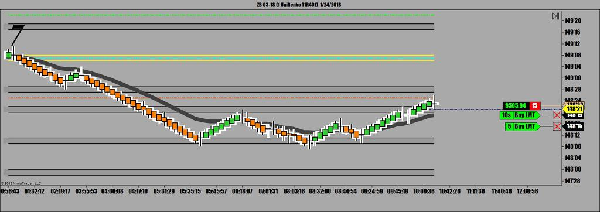
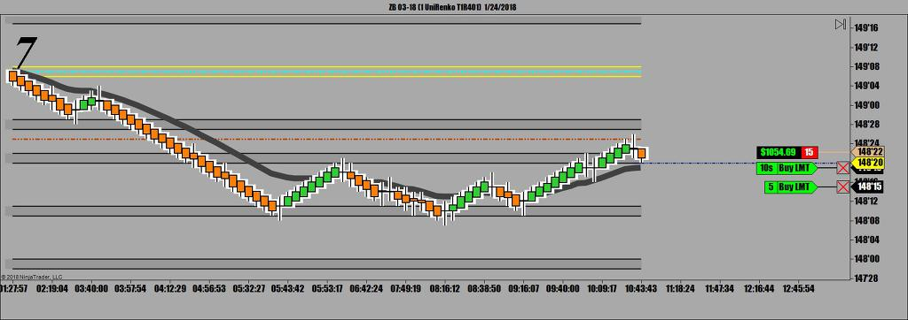
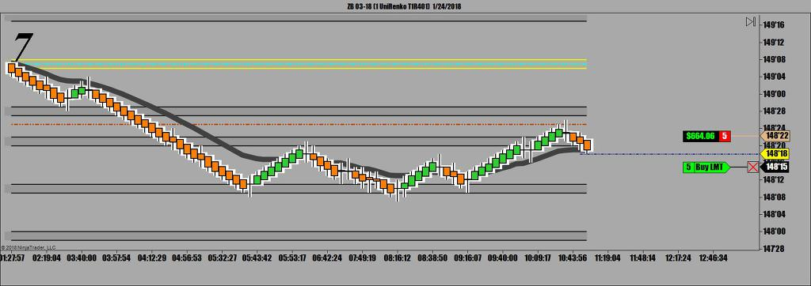
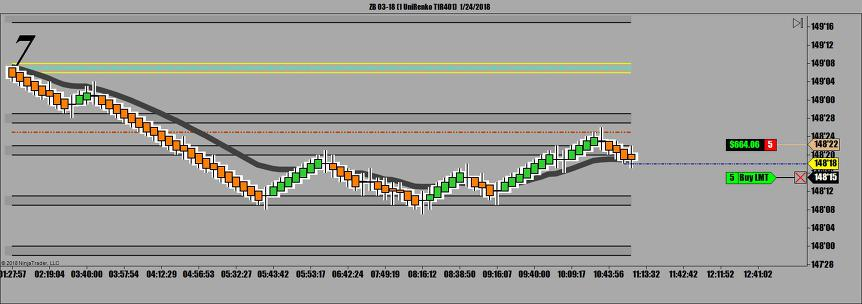
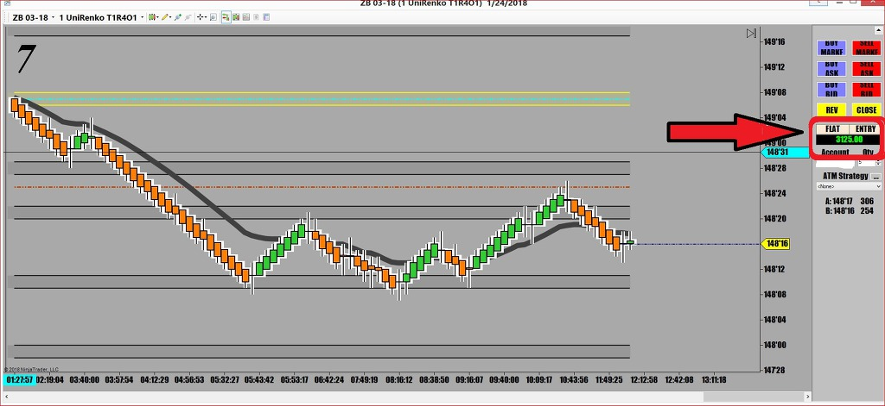

오늘은 중요한 경제지표 발표도 없었고 장을 움직일만한 큰 재료도 없는 날
일봉상으로보면 어제 20일 이평선에 닿았다가 다시 하락하는 상황

매매를 할 땐 제일먼저 현재 추세를 이해하는게 중요
월봉 주봉 일봉 이런식으로 읽어가야
그 다음에 12000 Tick, 5991 Tick ,987 Tick 순으로 읽어가다보면 오늘 진행 방향을 어느 정도 예상할 수 있음
오늘 매매는
새벽부터 20 MA에 닿자마자 하락하는 눌림목에 들어가서 한 번 수익나고 10시쯤부터 반등하다 다시 밀리는 지점에서
매매해서 수익나고 두번 매매
첫번째 매매
 12_12_2017 - 1_19_2018.jpg)
하락장에서 이평선 아래쪽에서 살짝 반등하는 눌림목을 만들었다가 곧바로 큰 물량이 터지면서 밀리는 순간이 포인트
제가 만든 매매씨스템으로 보면 색깔이 바뀌는곳이 매매포인트. 거기서 매도로 진입해서 오늘의 지지선에서 매수
그리고 계속 지켜보다가 두번째 매매는 하락을 하다가 일단 반등을 시작하고 어제 저점에 맞고 하락하는 순간 진입




항상 매수 매도는 분할로
국채선물은 아래 위로 심하게 흔들면서 진행하는 다른 선물처럼 매매하면 안됨
계단을 내려가듯 한걸음씩 가기 때문에 일단 체결가에 무조건 포지션을 잡아야
좋은 가격에 사보려고 뒷쪽에 주문 넣어놓고 기다리다가는 매매 못하는 경우가 생김
국채선물은 일단 진행하면 뒤도 안돌아보고 진행함
그리고나서 혹시라도 뒤로 밀릴 경우에 대비해 바로 한 틱 위에 또다른 주문을 내야
그렇게하면 포지션을 확실히 잡을 수 있고 혹시 뒤로 밀려서 다른 계약마저 체결되면 매수(매도)가가 낮아져서 이익
계약이 체결되면 항상 손절주문(stop loss order)을 4 Tick으로 잡아서 곧바로 올려놔야 함
선물매매를 하면서 손절 안하고 물타기 하자고 덤비다가 제대로 한번 걸리면 계좌 깡통됨
결국 오늘은 두번 매매해서 3125불 수익

매매일지를 쓰는것은 매우 중요
수익이 났건 손실이 났건간에 매매일지를 쓰면서 그날의 매매복기를 해보는게 중요
뭘 잘했는지 뭘 잘못했는지 냉철하게 분석하고 비판하는게 실력향상의 유일한 길
오늘 큰 손실봤다고 꼴도 보기싫다고 컴퓨터 꺼버리고 술이나 퍼마신다든지 하면서 매매일지 안적으면
오늘했던 실수를 다음주에 또하게 됨
그리고 일단 매매일지를 적어놨으면 나중에 시간날때마다 매매일지를 가끔씩 읽으면서 복습하는것 또한 중요
그 다음 단계는 어떤 방법으로 매매를 했을때 수익이 났는지 손실이 났는지를 통계를 내야 함
그 통계에 따라 매매방법을 조금씩 수정해 나갈때 비로서 자신만의 필살기가 완성됨
현명한 사람은 실수를 통해 배우지만 미련하고 게으른 사람은 자기가 재수가 없다고 말을 함
사람은 누구나 재수가 없음
그래서 나쁜일 백 번 일어나야 좋은일 한 번 일어나는게 인생
그런 거지같은 인생을 우리 노력으로 바꿔 나가야 함
오늘의 매매
눌림목 매매 성공
지지/저항선 매매 성공